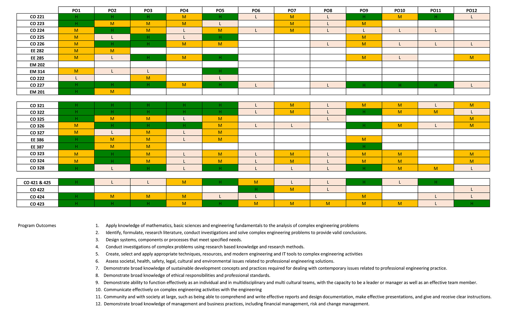

Courses offered in four-year degree program
Semester 1
Semester 2
Semester 3
Semester 4
Semester 5
Semester 6
Semester 7
Semester 8
Technical Electives
General Electives
Semester 1
All Engineering students follow the same first semester. These courses are credited towards their general programme (first year).
GP101 English I (3 credits)
Course Content:
Language development, Communication through reading, Communication through listening, Communication through writing, Communication through speech
(Lectures - 20h, Assignments - 50h)
GP103 Mathematics I (3 credits)
Course Content:
Real number system, its properties and the real axis, Functions of a single variable, 2-D co-ordinate geometry, 3-D Euclidean geometry, 3-D Euclidean co-ordinate geometry, Complex numbers, Functions of positive integers, Recurrence relation, Infinite series, Real power series, Special functions, Integration, Functions of several variables, Introduction to differential equations,
(Lectures - 36, Assignments -18h).
GP105 Engineering Drawing (3 credits)
Course Content:
Fundamentals, Orthographic and isometric views, Engineering graphics, Freehand sketching, Introduction to drawing for civil and electrical engineering applications, Other: speed tests
(Lectures - 18, Practical classes - 45h, Assignments - 9h).
GP109 Materials Science (3 credits)
Course Content:
Introduction to the structure and properties of engineering materials, Principles underlying structure-property relationships, Phase equilibrium, Structure and properties of cement and timber, Properties and applications of polymers, ceramics and glasses, Properties and applications of composites, Mechanical testing of engineering materials, Laboratory testing practices
(Lectures & Tutorial classses - 36h, Practical classes & Assignments -18h).
GP110 Engineering Mechanics (3 credits)
Course Content :
Force systems, Analysis of simple structures, Work and energy methods, Inertial properties of plane and three-dimensional objects, Fluid pressure, Fluid statics, Particle kinematics, Planar rigid body kinematics, Particle kinetics, Planar rigid body kinetics, Laboratory work
(Lectures - 28, Tutorial classes - 11h, Practical classes - 12h).
GP112 Engineering Measurements (3 credits)
Course Content:
Units and standards, Approximation errors and calibration, Measurement of physical parameters, Measurement project, Presentation of engineering information, Surveying
(Lectures & Tutorial classes - 17h, Practical classes & Assignments -56h).
Semester 2
All Engineering students follow the same second semester. These courses are credited towards their general programme (first year).
GP101 English I (3 credits)
Course Content:
Language development, Communication through reading, Communication through listening, Communication through writing, Communication through speech
(Lectures - 20h, Assignments - 50h).
GP104 Mathematics II (3 credits)
Course Content:
Vectors, Matrix theory, Determinants, Transformations, Solution of simultaneous equations, Vector space, Characteristic value problems, Quadratic forms
(Lectures - 36h, Assignments - 18h).
GP106 Computing (3 credits)
Course Content:
Introduction to computing, Problem solving with mathematical packages (as a calculator), The fundamentals of algorithms, Introduction to high-level programming languages, Problem solving with programs, Scientific programming with a mathematical package
(Lectures - 25, Tutorial classes -10h, Practical classes - 20h).
GP113 Fundamentals of Manufacture (3 credits)
Course Content:
Introduction to manufacturing industry, Introduction to manufacturing processes and safety measures, Machining: Casting: Welding, Metal forming and Forging, Manufacturing systems, Automobile technology, Printed circuit board (PCB) fabrication and soldering and related technologies
(Lectures - 20,Tutorial classes - 7h, Practical classes - 36h)
GP108 Electricity (3 credits)
Course Content:
Measurements, Circuits, Electrostatics, Electromagnetism
(Lectures - 27, Tutorial classes - 6h, Practical classes - 24h).
GP111 Elementary Thermodynamics (3 credits)
Course Content :
Fundamentals, The Zeroth Law and the First Law, Thermodynamic substances, Application of the First Law to closed systems, Application of the First Law to open systems, Air standard cycles, The Rankine cycle, The Second Law, Laboratory classes
(Lectures - 27, Tutorial classes - 9h, Practical classes - 12h, Assignments - 6h).
Semester 3
The following compulsory courses are offered to Computer Engineering students in their 3rd semester.
CO221 : Digital Design (3 credits)
Course contents:
Introduction to digital logic, Number systems and digital logic, Combinational logic circuits, Modular design of combinational circuits, Sequential logic circuits and memory elements, Design of synchronous sequential circuits, Analysis and design of asynchronous sequential circuits, Digital circuit design and implementation
(Lectures - 30h , Practical classes - 16h, Assignments - 14h)
Textbooks and References:
-
Morris Mano, Digital Design, 3rd Edition
-
William James Dally and R. Curtis Harting, Digital Design - A Systems Approach
CO222 : Programming Methodology (3 credits)
Course Content:
Problem solving, Storing and naming data and operators, Control flow, Using standard library functions, Structured programming, Static allocation, References (pointers), Linked structures, Memory layout, Language tool-chains, Support tools.
(Lectures - 24h , Tutorial classes - 8h, Practical classes - 14h, Assignments - 12h)
Textbooks and References:
-
J.D. Ulman, Foundations of Computer Science C edition
CO223 : Computer Communication Networks I (3 credits)
Course Content:
Communication networks, Terminology, classification, and performance metrics, Network Design: Layered network architectures, Network applications and transport services, Packet-switching networks, Transmission over links and local area networks, Physical transmission fundamentals, Circuit-switching networks.
(Lectures - 30h, Tutorial classes - 2h, Practical classes - 22h, Assignments - 4h)
Textbooks and References:
-
J. F. Kurose and K. W. Ross. Computer Networking: A Top Down Approach.
EM201: Mathematics III (3 credits)
Course Content:
Introduction, Different types of differential equations and solutions, Modelling with differential equations, First order differential Equations, Differential equations with constant coefficients, Linear differential equations, Solutions in series, Laplace transformations, System of ordinary differential equations, Numerical solutions to ODEs, Concept of probability, Discrete probability distributions.
(Lectures - 36h , Tutorial classes - 9h)
EM313: Discrete Mathematics (3 credits)
Course content:
Fundamentals, Combinatories, Graph theory, Algorithms, Prepositional calculus, Mathematical models for computing machines.
(Lectures - 36h , Tutorial Classes - 9h )
EE282: Network Analysis for Computer Engineering (3 credits)
Course Content:
Review of DC circuits, First-order circuits, Second-order circuits, Sinusoidal steady state analysis, Laplace transform and network analysis, Two-port networks
(Lectures - 45h)
Semester 4
The following compulsory courses are offered to Computer Engineering students in their 4th semester.
CO224 Computer Architecture (3 credits) Prerequisites: CO221, CO222
Course Content:
Overview, Fundamentals of computer architecture, Computer arithmetic, CPU organization, Pipelining, Memory hierarchies, Interfacing and communication, Performance issues, Multiprocessors.
(Lectures - 29h , Tutorial classes - 4h, Practical classes - 14h, Assignments - 10h)
Textbooks and References:
-
David Patterson, John L. Hennessy, Computer Organization and Design: The Hardware/Software Interface, 4th Edition
CO225 Software Construction (3 credits) Prerequisite: CO222
Course Content:
Introduction of features of a selected language, Data collections (containers), Input/output, error handling and parsing textual formats, Declarative programming, Classes and objects, Event-driven programming, Concurrency and network clients, Code quality.
(Lectures - 25h, Tutorial classes - 6h, Practical classes - 20h, Assignments - 8h)
Textbooks and References:
-
Mark Pilgrim, Dive into Python 3: http://www.diveinto.org/python3/
-
Software Carpentry Lessons: http://software-carpentry.org/v4/
-
Brad Miller and David Ranum, Problem Solving with Algorithms and Data Structures: http://interactivepython.org/runestone/static/pythonds/index.html
CO226 Database Systems (3 credits) Prerequisites: CO222, EM313
Course Content:
Introduction to database systems, Data modelling, RDBMS concepts, Database query languages, Database programming techniques, Introduction to indexes and query optimization, Introduction to transaction processing, Database Project.
(Lectures - 31h, Tutorial classes - 4h, Practical classes - 12h, Assignments - 8h).
Textbooks and References:
-
Ramez Elmasri and Shamkant B. Navathe, Fundamentals of Database Systems
EM202 Mathematics IV (3 credits)
Course Content:
Functions of several variables, Partial derivatives double and triple integration, Vector fields and operators, Orthogonal curvilinear coordinates, Integrals and integral theorems, Constrained optimisation of functions of several variables, Continuous probability distributions, Sampling distributions, Estimation and confidence intervals, Hypothesis testing.
(Lectures - 36h, Tutorial classes - 9h )
EM314 Numerical Methods (3 credits)
Course content:
Introduction, Solutions to systems of linear equations, Solutions to non-linear equations, Interpolation, Approximation and curve fitting, Numerical calculus, Numerical solutions to ordinary differential equations, Introduction to numerical solutions to partial differential equations.
(Lectures - 31h, Tutorial classes - 4h, Assignments - 20h 5)
EE285 Electronics I (3 credits)
Course Content:
Diodes, Bipolar Junction Transistor, Amplifiers, Operational Amplifiers(OPAMP), OPAMP Applications, Junction Field Effect Transistors(JFET), Metal Oxide Semiconductor(MOS) Field Effect Transistors, Electronic Laboratory.
(Lectures - 30h, Tutorial classes - 3h, Practical classes - 21h, Assignments - 3h)
Textbooks and References:
-
Millman and Halkias, Integrated Electronics.
Semester 5
The following compulsory courses are offered to Computer Engineering students in their 5th semester.
CO321 Embedded Systems (3 credits) Prerequisite: CO224
Course Content:
Introduction to microcontrollers, Memory organization of microcontrollers, Programming of flash microcontrollers, I/O port configuration and programming interfaces, A/D converters and applications, Timer systems of microcontrollers, Applications of non-volatile memory, Industrial Applications, Student Project.
(L31, P20, A8 =45).
Textbooks and References:
-
Fredrick M. Cady: Microcontrollers and Microcomputers- Principles of Software and Hardware Engineering.
-
Mano, M.M. & Kime, C.R.: Logic and Computer Design Fundamentals
CO322 Data Structures and Algorithms (3 credits) Prerequisite: CO225
Course Content:
Running time and time complexity, Divide and conquer, Linear abstract data types, Hashing and the set ADT, Trees, Graphs, Greedy algorithms, Dynamic programming.
(L30, P18, A12 =45).
Textbooks and References:
-
Cormen, Rivest, Introduction to Algorithms
-
Aho, Hopcroft and Ullman, Data structures and algorithms
-
Sedgewick and Wayne, Algorithms
CO323 Computer Communication Networks II (3 credits) Prerequisite: CO223
Course Content:
An overview of communication networks, Network application design and network programming, Control-functionalities, Transport protocols, Packet-switching networks and routing, Transmission over links, multiple access protocols and local area networks, Physical transmission issues, Review: pig-picture of networking, trends and challenges, Student seminars.
(L30, T2, P23, A3 =45).
Textbooks and References:
-
J. F. Kurose and K. W. Ross. Computer Networking: A Top Down Approach. 6th edition.
-
L. Garcia and I. Widjaja, Communication Networks: Fundamental Concepts and Key Architectures. 2nd edition.
CO324 Network and Web Application Design (3 credits) Prerequisites: CO223, CO225
Course Content:
Review of Internet protocol stack, Network servers, Design of application protocols, I/O concurrency, Remote procedure calls, HTTP and HTML, Dynamic web content generation, Web frameworks, Browser scripting, Network application security, Deployment considerations.
(L26, T4, P16, A14 =45).
Textbooks and References:
-
John Goerzen and Brandon Rhodes, Foundations of Python Network Programming
-
Jan Newmarch, Network programming with Go (http://jan.newmarch.name/go/)
CO325 Computer and Network Security (3 credits) Prerequisite: CO223
Course Content:
Introduction, Symmetric key ciphers, Asymmetric key ciphers, Cryptographic hash functions, Cryptographic primitives and protocols, Protocol attacks and countermeasures, Computer security - Authentication mechanisms and protocols, Computer security - Access control, Network security - Identity and trust systems, Network security - Secure Communication, Usability, psychology, organisational security policy.
(L30, T5, P10, A10 =45).
Textbooks and References:
-
Ross Anderson, Security Engineering
-
Behrouz Forouzan, Cryptography & Network Security
EE386 Electronics II (3 credits) Prerequisite: EE285
Course Content: Data conversion circuits, Diode Logic Circuits, BJT Logic families, MOS Logic Families, Storage Elements, Design Parameter and issues, Interfacing logic families, Active Filters, Oscillators, Circuit modeling and simulation, Electronic Laboratory.
(L33, P24=45).
Textbooks and References:
-
Millman and Taub, Pulse and digital circuits.
-
Millman and Halkias, Integrated Electronics.
Semester 6
The following compulsory courses are offered to Computer Engineering students in their 6th semester.
CO326 Computer Systems Engineering: Industrial Networks (3 credits) Prerequisite: CO321, EE386
Course Content:
Introduction, Hardware Components for designing control systems, Designing simple digital systems using a standard PC, Designing I/O systems for standard PC, Development of control systems using microcontrollers, Communication for industrial control systems, Instrument automaton and development of test systems, PC based test, measurement and control modules and modular systems, SCADA and Industrial Automation Systems, Industrial automation project.
(L34, P12, A10 =45).
CO327 Operating Systems (3 credits) Prerequisite: CO224, CO322
Course Content:
Introduction, OS abstractions, Threads, Processes, Synchronization, File systems, IO subsystem, OS implementation methods, Self-study.
(L31, P12, A16 =45).
Textbooks and References:
-
A. Tanenbaum, Modern Operating Systems
-
Vahalia, Unix Internals: The new frontiers
CO328 Software Engineering (3 credits) Prerequisite: CO226, CO322, CO324
Course Content:
Introduction, Lightweight processes, Requirements specification, Domain modelling, Implementation transition, Testing and contracts, Principled object-orientation, Architectural techniques, Software reengineering, Software Engineering Project.
(L28, T3, P8, A20 =45).
Textbooks and References:
-
Eric Evans, Domain-Driven Design: Tackling Complexity in the Heart of Software
-
James O. Coplien, Gertrud Bjørnvig, Lean Architecture for Agile Software Development
-
Serge Demeyer, Stéphane Ducasse, Oscar Nierstrasz, Object-Oriented Reengineering Patterns
EE387 Signal Processing (4 credits) Prerequisites: EE282, EM202
Course Content:
Fundamental Concepts of Signals, Time Domain Processing of Signals, Fourier Series, Fourier Transformation, Frequency Domain Analysis of Discrete-time Signals, Transfer Functions, Frequency Domain Processing of Singals.
(L39, T13, P8, A8=60).
Semester 7
he following compulsory courses are offered to Computer Engineering students in their 7th semester.
CO421 Final Year Project I (3 credits)
Course Content:
Project planning, literature review, implementation, evaluation, report writing, presentation of findings, project demonstration.
(A90 =45).
CO422 Professional Practices (2 credits)
Course Content:
Professionalism, Group Dynamics and Psychology, Communication Skills.
(L25, A10=30).
CO423 Software Project Management (2 credits) Prerequisite:CO328
Course Content:
Introduction to the subject, Project life cycle and organization, Team structures, The role of risk in the life cycle, Project Quality management, Application quality requirements, Process improvement models, Project Management topics.
(L22, P6, A10=30).
CO424 Information Systems Management (2 credits) Prerequisite:CO328
Course Content:
Introduction to Information Systems, Relationship between IS and the business, IS planning and budgeting, Acquiring information technology resources and capabilities, Risk management, Case study.
(L20, A20=30).
Semester 8
The following compulsory courses are offered to Computer Engineering students in their 8th semester.
CO425 Final Year Project II (3 credits)
Course Content:
Project planning, literature review, implementation, evaluation, report writing, presentation of findings, project demonstration.
(Assignments - 90h).
Technical Electives
CO502 Advanced Computer Architecture (3 credits) Prerequisite:CO224
Course Content:
Fundamentals of computer design, Introduction to instruction level parallelism (ILP), Pipelined processors, Exploiting ILP with software approaches, Exploiting ILP with hardware approaches, Memory hierarchy design, Hardware description languages and simulation, Computer architecture and dependability, Special purpose processors.
(L25,T5, P14, A16=45).
CO503 Advanced Embedded Systems (3 credits) Prerequisite: CO321
Course Content:
Introduction to embedded systems, Custom single-purpose processors, General-purpose processors: software, Embedded system modelling: state machine and concurrent process models, Design technologies of embedded systems, Hardware/software co-design of embedded systems, Operating systems for embedded systems, Design example, System on a Chip (SoC).
(L&T30, P&A30=45).
CO504 Hardware Software Co-design (3 credits) Prerequisites: CO224
Course Content:
Introduction to hardware/software co-design, Mapping applications to architecture, System partitioning, Design space exploration, Interface synthesis, Estimation, System simulation, Execution time analysis, Performance analysis. (L29, T4, P18, A6 =45).
CO513 Advanced Computer Communication Networks (3 credits) Prerequisite: CO323
Course Content:
An overview of communication networks, Multimedia network applications and protocols, Quality of service, Broadcast and multicasting routing, Multi-protocol label switching (MPLS) and Generalized MPLS, Wireless and mobile networks, Network security, Network management.
(L30, T2, P15, A11 =45).
CO514 Optical Communication Networks (3 credits) Prerequisite:CO323
Course Content:
An overview of communication networks, Optical transmission fundamentals and issues, IP traffic over WDM optical networks, Synchronous optical networks (SONET)/Synchronous digital hierarchy (SDH), WDM optical networks: optical circuit switching (OCS), WDM optical networks: optical packet switching (OPS), WDM optical networks: optical burst switching (OBS), Optical access networks, Other technologies, trends, and challenges.
(L30, T7, A16=45).
CO515 Advances in Computer Networks:Selected Topics (3 credits) Prerequisite:CO323
Course Content:
An overview of networking trends, Data center networks and applications, Network function virtualization and Software Defined Networks, Carrier internt protocol, Multiprotocol label Switching (MPLS), Carrier Ethernet, Provider backbone, Metro Ethernet, Traffic Engineering, Big data concepts and applications, Network management.
(L35, T2, A16=45).
CO521 Compilers (3 credits) Prerequisite: CO 322
Course Content:
Introduction, Programming tools: Lexical analysis, Semantic analysis, Static semantics, Code generation, Miscellaneous topics.
(L&T30, P&A30=45).
CO523 Programming Languages (3 credits) Prerequisite:CO322
Course Content:
Introduction. Imperative languages: Object oriented languages, Functional languages, Logical languages, Concurrent languages.
(L&T27, P&A36=45).
CO524 Parallel Computers and Algorithms (3 credits) Prerequisites: CO327
Course Content:
Parallel architecture, Interconnection networks, Designing parallel programmes, Performance modelling, Programming paradigms, Message passing interface, Multithreading, Parallelising numerical algorithms, Parallelising non-numerical algorithms, State of the art.
(L30, P8, A22 =45).
CO526 Advanvced Operating Systems (3 credits) Prerequisite: CO327
Course Content:
Introduction to operating system design, Introduction to microkernel, Microkernel based systems, Managing virtual memory, Process Management, File Systems, Threads, Syttem calls, I/O handling, Security, Research topics.
(L30, P&A30 = 45).
CO527 Advanced Database Systems (3 credits) Prerequisite: CO226
Course Content:
Data storage and indexing structures, Query Optimization and database tuning, Transaction Processing, Database security, Distributed Databases, Object databases and Object-relational databases, other data models, Data models for advanced applications.
(L32, T6, P12, A2 =45).
CO528 Applied Software Architecture (3 credits) Prerequisite: CO328
Course Content:
Introduction to applied software architecture, Basic of software architecture, Web application architectures, Service oriented architectures, Enterprise architectures, Product architectures, Mobile application architectures, Cloud architectures.
(L31, P12, A16 =45).
CO541 Artificial Intelligence (3 credits) Prerequisite: CO222
Course Content:
Introduction, Artificial intelligence programming, Knowledge representation and inference, Expert systems, Search, Natural language processing, Vision, Dealing with uncertainty, Role of neural networks and fuzzy logic in AI, Applications of AI.
(L&T38, P&A14 =45).
CO542 Neural Networks and Fuzzy Systems (3 credits)
Course Content:
Introduction to fuzzy systems, Fuzzy relations, Extension principle , Fuzzy inference, Fuzzy non-linear simulation, Fuzzy applications , Artificial neural networks (ANN), Learning in ANN, The perceptron, Back propagation algorithm, Hopefield model, Memory type paradigms, Fuzzy neural networks applications
(L&T33, P&A24=45).
CO543 Image Processing (3 credits)
Course Content: Introduction, Digital image fundamentals, Image enhancement in the spatial domain, Image enhancement in the frequency domain, Colour image processing, Image compression, Assignments.
(L&T30, P&A30 =45).
CO544 Machine Learning and Data Mining (3 credits) Prerequisite: CO322
Course Content:
Introduction, Input, Output, Basic algorithms, Evaluation and credibility, Real machine learning algorithms, Data preparation for knowledge discovery.
(L&T40, P&A10 =45).
CO551 Theory of Computation (3 credits)
Course Content:
Preliminaries, Finite automata, Regular expressions and properties of regular sets, Context-free grammars (CGF) and properties of context-free languages (CFL), Pushdown automata, Turing machines, Undecidability, Complexity theory, Intractable problems.
(L&T37, P&A16 =45).
CO552 Game Theory and Markov Decision Processes (3 credits) Prerequisite: EM202
Course Content:
Introduction to game theory, Mixed Strategies, Expected Payoffs, Nash Equilibrium and Nash Theorem, 2-Player Zero-Sum Games, and The Minimax Theorem, Linear Programming, Simplex Algorithm, LP Duality Theorem, Computing Solutions for General Finite Strategic Games, Games in Extensive Form, Games of Perfect Information, Games on Graphs, Simulation, Markov Decision Processes and Stochastic Games, Selfish Network Routing, Congestion Games, and the Price of Anarchy, Auctions and Mechanism Design, Reachability and safety games, Buchi and coBuchi Games.
(L35, T10, A10 =45).
CO553 Formal Verification Tools and Techniques for Complex Reactive Systems (3 credits) Prerequisite: EM313
Course Content:
The aim of this course is to impart a working knowledge of formal methods used in rigorous verification of reactive systems and enable students to use them in designing systems.As principle objectives, at the end of the course,students are expected toknow how the behaviour of a complex (safety-critical) reactive system could be specified and how such a system could be designed so that they could prove the correctness of the system behaviour usingan appropriate formalism from among, (symbolic) model checking and temporal logic, Hoare logic and weakest precondition calculus, Petri nets and process algebra.
(L31, T4, A20 =45).
General Electives
CP551 Sustainable Development (3 credits)
Course content:
environment, economy and society. Games and group discussions to introduce the need for sustainable development in today’s world. Concepts of economic development and human development. Economic development indices and their critique. Human development index and its critique. Discussion on sustainable development indices. Group discussion on economic development, and the impact on public health and environment. Group discussion on climate change and development, and other environmental and ecological related issues in today’s world. Science, technology, innovations and sustainable development. Energy and transport for economic development and human development, and their impact on sustainable development. Industrial and service sector and their impact on sustainable development. Use of fertilizers and pesticides, green revolution and agricultural biotechnology in the agricultural sector, and their impact on sustainable development. Globalization and its impact on sustainable development. Information and communication technology and its impact on sustainable development. Sustainable development project execution, report writing and assessment.
(L&T30, P&A30 =45).
PR507 Industrial & Organizational Psychology (2 credits) Prerequisite: PR401
Course Content:
History of industrial/organizational psychology. Research methods in industrial/organizational psychology. Criteria: standards for decision making. Predictors: Physiological assessments. Personnel decisions. Training & development. Performance appraisal. Organizations and work teams. Organizational behaviour. Stress & well being at work. Work motivation. Leadership. Job design & organizational development. Union/management relations. Ergonomics and work conditions. The changing nature of work.
(L27, Proj3, A3 =30).
EF501 The Engineer in Society (2 credits)
Course Content:
Evolution of Industry and its Future. Energy sources and the impact of their use on society. Environmental issues, assessing industrial impact on the environment and on society. Sustainable development and engineering sustainability. Issues in engineering safety. The workforce and human relations. Issues of fundamental rights and human rights. Legal liabilities and legal responsibilities to society. Professional codes of conduct.
(L25, A10 =30).
EF503 Critical Thinking and Writing Skills (2 credits)
Course Content:
Introduction and Overview: Development of critical thinking through writing. Writing as power and communication. Narrative strategies and writing skills. Culture in cinema, TV, newspaper and Internet: Writing in today’s world. Institutional power and writing. Gender: writing in a gendered society. Language and writing skills: Sri Lankan English in the global context. Reports and presentations.
(L22, Proj6, A10 =30).
EF505 Management in Practice with Case Studies (3 credits)
Course Content:
Business and its environment, Evolution of management. Principles of management. Functions of management. Human potential management. Motivation and organizational culture. Management information system. Crisis management, Change management, Conflict resolution. Social responsibility and managers. Reports and presentations.
(L35, T7, P6 =45).
EF507 Government and Politics of Sri Lanka (2 credits)
Course Content:
1978 Constitution of Sri Lanka: legislature, executive and judiciary. Political cultures of Sri Lanka: attitudes, belief, norms and values related politics. Pre- and post-election violence. Administration in private and public sectors. Human rights and fundamental rights. Development of gender concepts with emphasis to Sri Lankan situation. Foreign policy of Sri Lanka and future directions. The influence of international and regional organizations on the Sri Lankan peace process and development.
(L20, T7, A6 =30).
EF508 Political Issues in Sri Lanka (2 credits)
Course Content:
Electoral system, political parties, and political violence in Sri Lanka. Good governance and role of civil society. Constitutional crisis. Ethnic conflict and demand for devolution. development issues and poverty. Administrative issues. Gender issues. Foreign policy issues and regional issues. Energy and environmental issues with case studies.
(L18, T9, A6 =30).
EF509 Engineer as an Entrepreneur (3 credits)
Course Content:
Market and marketing. Forming of a company: Preparation of project proposal, working schedule, and budgeting. Plan implementation. Loan schemes. Service providers. ISO9000. ISO14000. Structure of organizations and laws governing them. Law governing the formation of a company. Getting registered. Memorandum of Association. Environmental regulations. Duty structure of Sri Lanka, Insurance, Management: Acquisition of technology. Technology transfer. Awareness of appropriate technology. Planning. Expansion and extension. Financial Activities: Financial handling. Financial statement. Quality Assurance. Statistics applied to industrial data. Leadership skills and development of management skills.
(L38, T1, A12 =45).
EF510 Technology and Economic Development (3 credits)
Course Content:
Introduction to technological evolution and its impact on economy and development. Role of technology in economic development. Technology, development and environment. Economic of natural resources - basic principles. Economics of environmental pollution - issues and instruments. Role of green technology in sustainable economic development. Assessment of economic damage caused by degraded environment induced by technology. Case studies in eco-friendly development projects. Reports and Presentations on the field visits.
(L27, T10, P6, A10 =45).
EF511 Social Project (2 credits)
Course Content:
The student shall work alone or in a small group on a theme selected by the student (or the group of students) under the general guidance of a supervisor (or supervisors). The theme will include a social objective, and the mode of study of the theme can be wide-ranging, such as a photographic exposition of poverty, a documentary movie on the social cost of development projects, a televised show of human right violations of people live by the dumping ground, a multimedia presentation on a selected social theme, and a report on union activities towards uplifting of a selected group of people. A project proposal, with the theme of the project clearly defined, its objective clearly stated, and the methodology of the project carefully laid down by the student (or the group of students), must be submitted to the supervisor (or supervisors) before the commencement of the project.
(Proj60 =30).
EF512 Rural Economic Development and Technology (2 credits)
Course Content:
Introduction to the need of rural economic development in Sri Lanka. Opportunities and limitations. Place of technology. Need of non-obtrusive and eco-friendly technology. The role of indigenous and appropriate technologies. Case studies, such as appropriate energy technology for rural sectors. Proposals from student groups (preferably area-based groups) on contribution of engineers towards rural economic developments. Critical study of post-independent rural economic development projects undertaken in Sri Lanka. Critical study of successful rural economic development projects in Southeast Asia and other regions. Complete project proposals for rural economic development.
(L21, T4, A10 =30).
EF513 Introduction to Music (2 credits)
Course Content:
Classical Indian and Western systems. Important musicians including great composers of both systems and their work. Musical instruments of Western and Indian systems. Trends in Sri Lankan music. Practical in instrumental or vocal music.
(L18, P20, A4 =30).
EF514 Cinema and Television (2 credits)
Course Content:
Introduction to cinema and television. Basics of cinema language - Single camera technology. Technical aspects of cinema and television. Cinema and television in mass communication and advertising. Aesthetic, sociological, and anthropological aspects of cinema and television.
(L23, Proj10, A4 =30).
EF515 Theatre and Drama (2 credits)
Course Content:
Ritualistic theatre folk drama. Greek and Roman theatre. Medieval, renaissance and Elizabethan theatre. The realistic and naturalistic theatre of Europe. Modern experimental theatre. Oriental theatre with special reference to Sri Lanka. Script writing, acting and directing.
(L20, Proj16, A4 =30).
EF516 Painting and Sculpture (2 credits)
Course Content:
Introduction to painting and sculpture. Understanding the human body, nature painting & sculpture. Main traditions of the West and the East. Traditional Sri Lankan painting and sculpture. Aesthetic, social and anthropological aspects of painting & sculpture. Computer graphics.
(L16, P24, A4 =30).
EF517 Project in Fine Arts (1 credit)
Course Content:
A group of students will carry out a project in one of the areas of fine arts under the general guidance of a supervisor (or supervisors). A project proposal, with the objective of the project clearly stated and the methodology of the project carefully laid down by the group of students, must be submitted to the supervisor (or supervisors) before the commencement of the project.
(Proj30 = 15).
EF519 Written English for Communication (1 credit)
Course Content:
Communication through writing: introduction to communication, effective communication, technical communication and objective communication. Official correspondence: letters for job application, curriculum vitae, and other official letters. Technical writing: research proposals, abstracts, feasibility reports, project reports etc.
(L10, A10 =15).
EF520 Effective Communication in English through Speech (1 credit)
Course Content:
Presentation skills: how to make a good presentation; organization of facts, structure, time management, effective contact with audience, good manners etc. Interviews: Preparation, points to note and to avoid. Effective speech: accepted ways of oral communication at formal level; meetings, telephone conversations, greeting, departing etc. Dialogue and general communication: general communication at informal level, talking on general topics, and conversation with peers.
(L7, Proj13, A3 =15).
EF522 Sri Lankan Technology (3 credits)
Course Content:
Introduction and overview: Sri Lankan technology of ancient time. Technology under European powers and under British. Post-independent and contemporary technology in Sri Lanka. Technology in Sri Lanka for the future. Irrigation Systems, Water Management Systems, Soil Management Systems. Building Structures and Architecture. Technology in Sri Lankan cottage industry. Statues and Images, Castings and coins.
(L35, A20 =45).
EF524 Business Law (3 credits)
Course Content:
Introduction: Legal System of Sri Lanka; Sources of Law; Structure of Counts; Difference between civil law and criminal law. Law of contracts. Sale of Goods, Bill of Exchange, Law of Agency. The law relating to partnerships. Company Law. Constitution of Sri Lanka. Intellectual property.
(L33, T7, P10 =45).
EF526 Marketing and Financial Management (3 credits)
Course Content:
The role of marketing, organization and society, Fundamentals of Marketing, Product Life Cycle and Consumer Behaviour. Marketing Mix and Production Mix. Corporate Marketing Strategy. Issues in Market Segmentation and Target Market. Marketing communications. General Financial Management and pricing approaches. Financial Management Decision on Financing, Investing, and Dividend. Capital Budgeting. Working Capital Management. Financial Institution. Financial Statement Analysis, Ratio Analysis.
(L30, P20, A10 =45).
EF528 Introduction to Digital Art (3 credits)
Course Content:
Desk Top Publishing Tools / Graphic Design (with emphasis on use of Adobe PhotoShop). Introduction to Digital Animation. Web Design using Macromedia packages. Linking Web Design to Graphic Design and Digital Animation. Multimedia presentation. Impact of digital revolution on the society.
(L30, P16, A14 =45).
Programme Outcomes

Program Education Objective (PEO)s
- Apply their computer engineering education to devise creative solutions to technical and societal problems with confidence and responsibility;
- Passionately engage in further endeavors, be it in engineering graduate study, in engineering professional practice, or in the pursuit of other fields such as science, law, medicine, business or public policy;
- Actively seek out roles of leadership within their profession and the larger community;
- Exemplify as role models for the highest ethical and professional standards;
- Retain the intellectual curiosity that motivates lifelong learning.